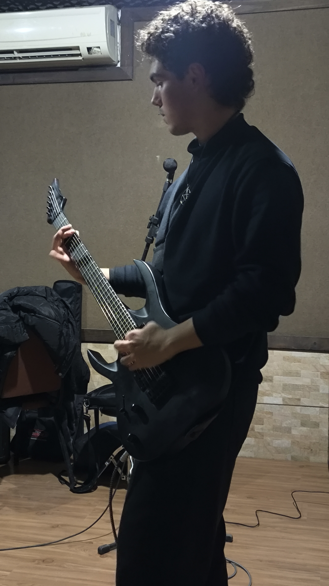

Gabriel Dos Santos Martins
Desenvolvedor de Sistemas


Olá, Sou o Gabriel!
Tenho 20 anos, Tenho vontade de:
Atuar ou estagiar na área de desenvolvimento de software, contribuindo positivamente no contexto incluso.
Adquirir conhecimento para meus próprios projetos de desenvolvimento ou para fins profissionais.
Trabalhar com alternativas Open Source para grandes aplicativos, com o propósito de distribuir conteúdo acessível a todos os usuários.
Desenvolver para sistemas baseados em Linux.
Formação:
Técnico em Desenvolvimento de Sistemas - SESI/SENAI - 03/2025 até 12/2026
Empresas:
Motostore Yamaha - Jovem Aprendiz TI - 04/2024 até 10/2024
Mitsubishi Sekai - Estagiário de TI - 07/2025 até 07/2026
Cursos e Treinamentos:
Santander Open Academy | Curso de introdução ao Python – 40h. Conclusão: 10/24
DIO | Curso de Git e Github – 26h. Conclusão: 10/24
Santander Open Academy | Curso de transformação digital – 20h. Conclusão: 10/24
Competências:
Manutenção de PCs, impressoras, roteadores e internet, instalação de softwares, uso de aplicativos de acesso remoto para manutenção em PCs de usuários, organização geral do espaço e estudos de banco de dados.
Node.js - 2 anos
Express.js - 1 ano
API - 1 ano
JWT - 6 meses
Postgresql - 1 ano
Idiomas:
Português - Nativo
Inglês - Fluente
Espanhol - Intermediário
Formas de contato:
Telefone:
(48) 99821-2696
gabrieldossantosmartins05@gmail.com
saints-gabriel
gabriel-martins-07a0b22b1
Desenvolvimento pessoal:
Criação de APIs com Express para projetos escolares em Node.js.
Aprendendo Lua para pequenas modificações em jogos.
Pequenos aplicativos em Python para aprender bibliotecas e frameworks.
Familiaridade com Linux (Debian-based) e Windows.
Metodologias ágeis (Kanban e Scrum)
Utilização de Git
POO em ES6
Ótima gestão de tempo e organização.
Comprometido com meus estudos e desenvolvimento profissional.
Comunicação clara e objetiva, resultando em boa dinâmica de grupo e bom desenvolvimento interpessoal.
Aprendizado rápido, adaptabilidade e capacidade criativa.
Participante em um projeto em grupo para o “Mundo Senai” em junho de 2025, onde foi desenvolvido um site em HTML5 com CSS3 para desativar uma bomba física fictícia criada pelo professor.
Desenvolvimento de projetos no Google Docs.
Projetos no Github: https://github.com/saints-gabriel/?tab=repositories